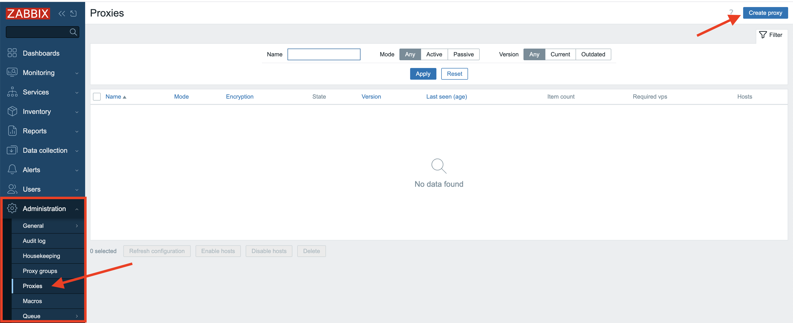
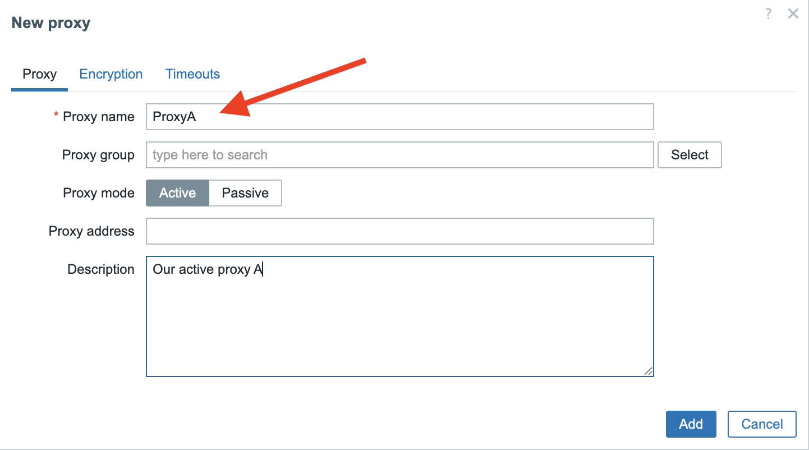
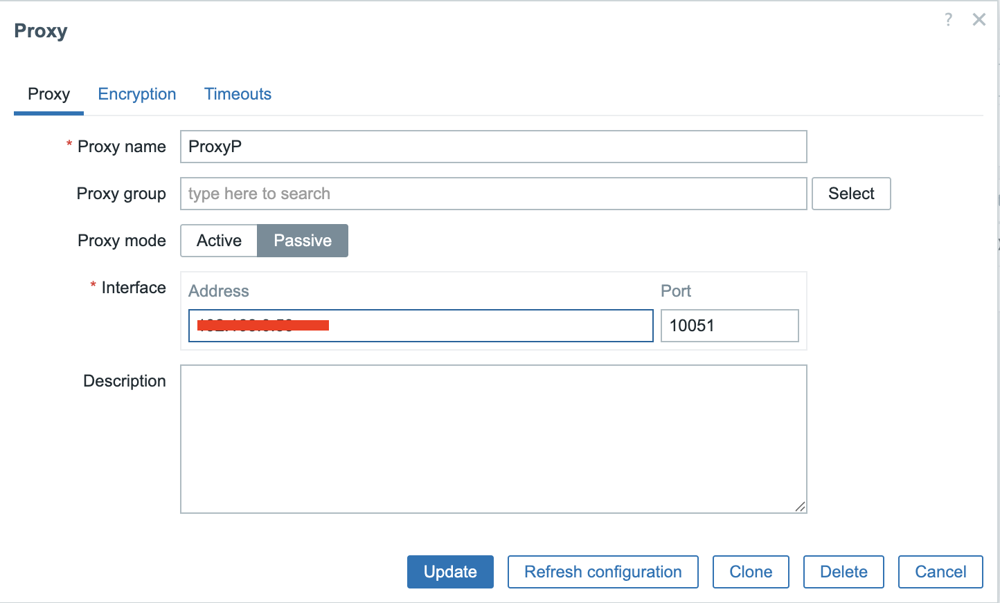
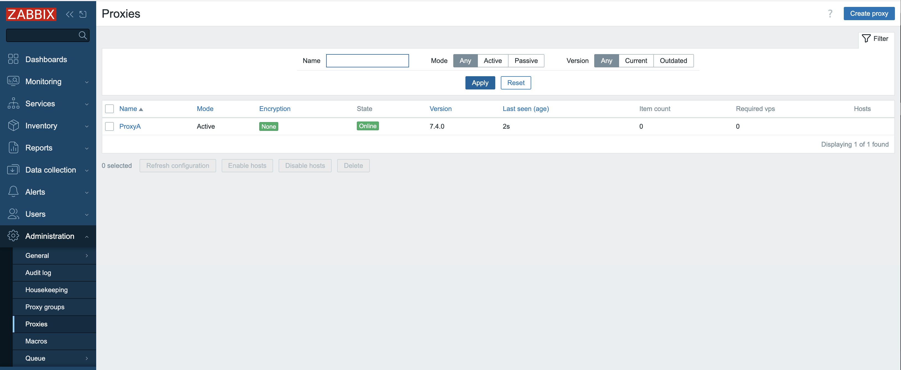
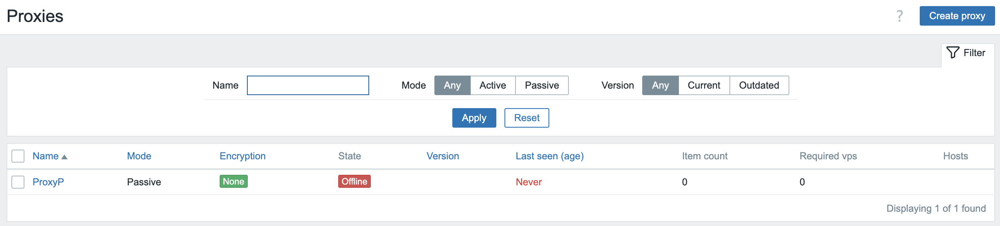
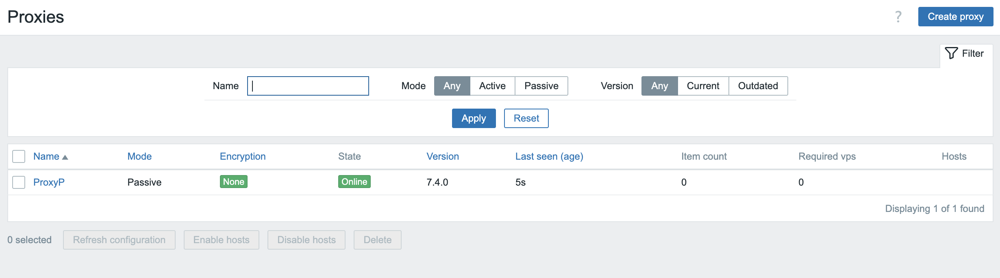

Active and Passive proxies
Whether you want to install an Active proxy or a Passive one, much of the installation and configuration steps are the same.
Zabbix GUI configuration
There are 2 things we need to do when we like to setup a Zabbix proxy and one of
those steps is adding the proxy in the frontend of Zabbix. So from the menu
let's select Administration => Proxies and click in the upper right corner
on Create proxy.

3.3 Create proxy
Once pressed, a new modal form will pop-up where we need to fill in some information.
Active proxy
For active proxies we only need to enter the Proxy name field. Here we will
enter ProxyA to remind us this will be an active proxy. Don't worry about the
other fields we will cover them later. In the Description field you could
enter some text to make it even more clear that this is an active proxy.
Note
For Zabbix active proxies, you only need to specify the hostname during configuration. This hostname acts as the unique identifier that the Zabbix server uses to distinguish between different active proxies and manage their data correctly.

3.4 New proxy
Passive proxy
For the passive proxy we will enter ProxyP as Proxy name but now we also
need to specify the Interface field. Here we add the IP of the host where our
proxy runs on. You also notice that we use the same port 10051 as the Zabbix
server to communicate with our proxy.

3.5 New passive proxy
Installing the proxy
Next up, we need to get the Zabbix proxy software onto a system that will function as Zabbix Proxy. Set up a new system or VM and make sure it meets the requirements as outlined in the Getting Started: Requirements chapter.
As the Zabbix proxy is actually a small Zabbix server, we also need to make sure the system is prepared for Zabbix as outlined in Preparing the server for Zabbix.
Now that your system is ready and knows where to find the Zabbix software packages, we can actually install the Zabbix Proxy software. It's pretty simple, but there's one thing we need to decide upfront. Zabbix proxies need a place to store their information, and they can use one of three options: MySQL/MariaDB, PostgreSQL, or SQLite3.
We will only cover SQlite as MySQL and PostgreSQL are basically already covered in the Zabbix components and installation: Database chapter.
Note
The only thing that is a bit different when you setup a MySQL or PostgreSQL database for use with a Zabbix Proxy instead of a Zabbix Server are the scripts you will need to setup the DB structure.
- For MySQL/MariaDB they are located in
/usr/share/zabbix/sql-scripts/mysql/proxy.sql. - For PostgreSQL they can be found in
/usr/share/zabbix/sql-scripts/postgresql/proxy.sql.
Install zabbix-proxy-sqlite3
Red Hat
SUSE
Ubuntu
Tip
If you want to use MySQL or PostgreSQL then you can use the package zabbix-proxy-mysql
or zabbix-proxy-pgsql depending on your needs.
Configuring the proxy
Now that we have installed the required packages we still have to do a few configuration changes.
Just like with the Zabbix server (or agent for that matter), the configuration file offers an option to include additional configuration files for custom parameters. In general, and especially in a production environment, it's often best to avoid altering the original configuration file directly. Instead you can create and include separate configuration files for any additional or modified parameters.
On SUSE 16 and later, this feature is already enabled and configured by default
in /usr/etc/zabbix/zabbix_proxy.conf.
On other distributions, you may need to enable it manually in
/etc/zabbix/zabbix_proxy.conf.
To enable this feature, ensure the next line exists and is not commented (with a
# in front of it):
The path /etc/zabbix/zabbix_proxy.d/ should already be created by the
installed package, but ensure it really exists.
Now we wil create a custom configuration file general.conf in this
/etc/zabbix/zabbix_proxy.d/ directory that will hold some general proxy
settings:
-
The first option we will have to set is
ProxyMode:- Set this to
0for an Active proxy. - Set this to
1for a Passive proxy.
- Set this to
-
The other option that is important is the option
Serverwhich defaults to127.0.0.1, so we need to replace this with the IP or DNS name of our Zabbix Server.
Note
You can fill in multiple servers here in case you have more than one Zabbix Server
connecting to your proxy. Also the port can be added here in case your server
listens on another port then the standard port 10051. Just be careful to not
add the IP and DNS name for the same server as this can return double values.
-
Another important option is
Hostname, especially on an Active proxy. Remember in our frontend we gave our Active proxy the nameProxyA, so now we have to fill in the exact same name here for hostname. Just like a Zabbix agent in active mode Zabbix server will use the name as a unique identifier.\ For a passive proxy this option matters less, but for clarity it is best to keep it the same:ProxyPin our case. -
On an Active proxy you may also consider setting
ProxyConfigFrequencyandDataSenderFrequencyto fine-tune communication with the Zabbix server, but generally speaking, the defaults should suffice. -
Other options to consider are
ProxyOfflineBufferandProxyLocalBufferto make sure the proxy can keep up with Zabbix server outages and the amount of monitored data it ingests.
The general.conf file should now look at least something like this:
To configure the database settings, create a dedicated configuration file at
/etc/zabbix/zabbix_proxy.d/database.conf. This file will contain the database
connection parameters.
For SQLite3 implementations, only the DBName parameter requires configuration,
specifying the path to the database file. The Zabbix Proxy will automatically
create and utilize this database file upon its initial startup.
You can choose any location for the database file, however you must make sure the directory exists and is writable by the Zabbix proxy process.
In our example, we chose the default home-dir of the zabbix-user as
configured by the Zabbix packages. You can check the home dir of the user on
your host using the getent passwd command:
Check default homedir of user zabbix
Check if the directory exists with correct permissions and SELinux context:
Check existence of zabbix home-directory
If the directory does not exist, is not owned by user zabbix or is missing the
SELinux label zabbix_var_lib_t, then you will need to correct this:
Create zabbix home-dir
Tip
See Advanced security: SELinux chapter for more details about SELinux and Zabbix.
MariaDB/MySQL or PostgreSQL as database for Zabbix proxy
If you chose to use MariaDB/MySQL or PostgreSQL, please refer to Installing the Zabbix server for the required database
settings you will need to set in the /etc/zabbix/zabbix_proxy.d/database.conf-file.
Tip
A list of all configuration options can be found in the Zabbix documentation. https://www.zabbix.com/documentation/current/en/manual/appendix/config/zabbix_proxy
A notable configuration parameter that was added in 7.0 is ProxyBufferMode
which determines how collected monitoring data is stored by the proxy before it
is forwarded to the Zabbix server.
Possible buffer modes:
disk- Disk buffer (default for existing installations prior to Zabbix 7.0)-
All data is written to the Zabbix Proxy database immediately before it is sent to the Zabbix server. In case of a proxy or system crash, all data is retained and will be sent to the Zabbix server as soon as the proxy is started again.
This is slower due to database I/O but is highly reliable.
memory- Memory buffer-
Data is stored in RAM and is not written to disk. This makes sure the data is sent to the Zabbix server as quickly as possible as there is no I/O wait time for the database involved. Downside is that when the proxy or the system crashes when the proxy still has data in the buffer, not yet received by the server, that data will be lost. Also when the RAM buffer overflows (
ProxyMemoryBufferSize), possibly due to a sudden burst of incoming items or the Zabbix server being unavailable for some time, older data will be removed from the buffer before it is sent to the Zabbix server. hybrid- Hybrid buffer (default for new installations since Zabbix 7.0)-
Data is primarily stored in RAM but is automatically written to the database when the memory buffer is full, the data is too old or when the proxy is stopped. This makes sure that data is preserved in case the Zabbix server is unreachable for a longer period or when there are bursts of many incoming items and hereby balances speed and reliability.
Warning
In Proxies that where installed before 7.0 the data was first written to
disk in the database and then sent to the Zabbix server. For these installations
when we upgrade this remains the default behavior after upgrading to Zabbix
7.x or higher. It's now recommended for performance reasons to use the new
setting hybrid and to define the ProxyMemoryBufferSize.
Once you have made all the changes you need in the config file besides the ones
we have covered, we only need to enable the service and start our proxy. Of
course don't forget to open the firewall port 10051 on your Zabbix server
side for the active proxy.
If all goes well we can check the log file from our proxy and we will see that Zabbix has created the database by itself.
View Zabbix proxy logs
localhost:~> sudo tail -f /var/log/zabbix/zabbix_proxy.log`
11134:20250519:152232.419 Starting Zabbix Proxy (active) [Zabbix proxy]. Zabbix 7.4.0beta2 (revision 7cd11a01d42).
11134:20250519:152232.419 **** Enabled features ****
11134:20250519:152232.419 SNMP monitoring: YES
11134:20250519:152232.419 IPMI monitoring: YES
11134:20250519:152232.419 Web monitoring: YES
11134:20250519:152232.419 VMware monitoring: YES
11134:20250519:152232.419 ODBC: YES
11134:20250519:152232.419 SSH support: YES
11134:20250519:152232.419 IPv6 support: YES
11134:20250519:152232.419 TLS support: YES
11134:20250519:152232.419 **************************
11134:20250519:152232.419 using configuration file: /etc/zabbix/zabbix_proxy.conf
11134:20250519:152232.419 cannot open database file "/var/lib/zabbix/zabbix_proxy.db": [2] No such file or directory
11134:20250519:152232.419 creating database ...
11134:20250519:152232.478 current database version (mandatory/optional): 07030032/07030032
11134:20250519:152232.478 required mandatory version: 07030032
In case of the active proxy, we are now ready. Going back to our frontend we should be able to see that our proxy is now online. Zabbix will also show the version of our proxy and the last seen age.

3.6 Active proxy configured
For the passive proxy however, you will notice in the frontend that nothing seems to be working at all even when we have configured everything correctly on our proxy.

3.7 Proxy not working
The explanation is rather easy as we run a passive proxy, the Zabbix server needs to poll our proxy. But we did not yet configure our Server to do that currently. So next step is to add the needed proxy pollers in our server configuration.
Edit or create a new configuration file in /etc/zabbix/zabbix_server.d/ on the
Zabbix Server machine to add the required StartProxyPollers setting.
And restart the Zabbix Server process.
Now going back to the frontend, we will see that our passive proxy becomes available. If it's not green give it a few seconds or check all steps again and verify your log files.

3.8 Proxy working
You are now ready.
For your monitored hosts, this proxy will behave like the Zabbix server. Hence,
all hosts you want to be monitored by the proxy will now have to be configured
to have their Server and/or ServerActive configuration values set to the
IP/hostname of this proxy instead of the Zabbix server.
Conclusie
This chapter has demonstrated the indispensable role of Zabbix proxies in building robust, scalable, and distributed monitoring infrastructures. We've explored the fundamental distinction between active and passive proxy modes, highlighting how each serves different deployment scenarios and network topologies. Understanding their individual strengths, from simplified firewall configurations with active proxies to the server-initiated control of passive proxies, is crucial for optimal system design.
We delved into the comprehensive settings that govern proxy behavior, emphasizing how proper configuration of parameters like proxy polling intervals and data buffers, directly impacts performance and data accuracy. The evolution of data storage mechanisms within the proxy, from purely memory-based approaches to the flexible options of disk and hybrid storage, empowers administrators to finely tune resource utilization and data persistence based on their specific needs and the volume of monitored data.
Finally, we examined the critical advancements in configuration synchronization, particularly the significant improvements introduced with Zabbix 7.0. The shift towards more efficient and streamlined config sync processes, moving beyond the limitations of earlier versions, underscores Zabbix's continuous commitment to enhancing operational efficiency and simplifying large-scale deployments.
In essence, Zabbix proxies are far more than simple data forwarders; they are intelligent intermediaries that offload significant processing from the central Zabbix server, reduce network traffic, and enhance the resilience of your monitoring solution. By carefully selecting the appropriate proxy type, meticulously configuring its settings, and leveraging the latest features in data storage and configuration management, you can unlock the full potential of Zabbix to monitor even the most complex and geographically dispersed environments with unparalleled efficiency and reliability. The knowledge gained in this chapter will be instrumental in designing and maintaining a Zabbix infrastructure that is not only robust today but also adaptable to future monitoring challenges.
Vragen
- What is the fundamental difference between an active proxy and a passive proxy in terms of who initiates the connection?
- How does a network firewall configuration differ for active vs passive proxies when separated from the server by a network firewall?